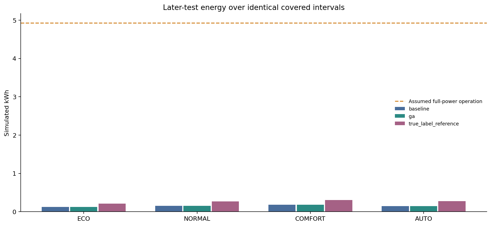
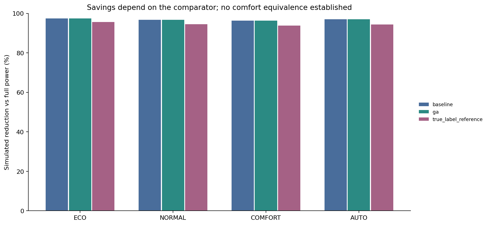
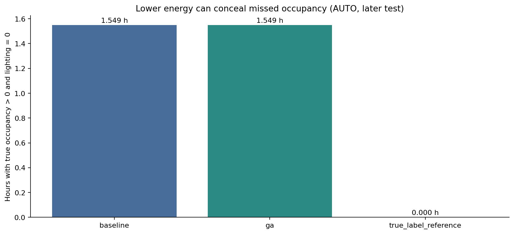
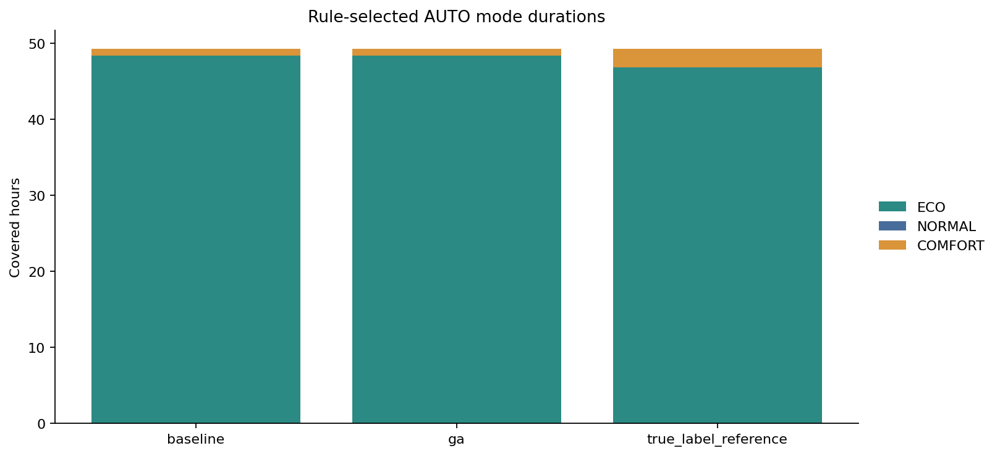
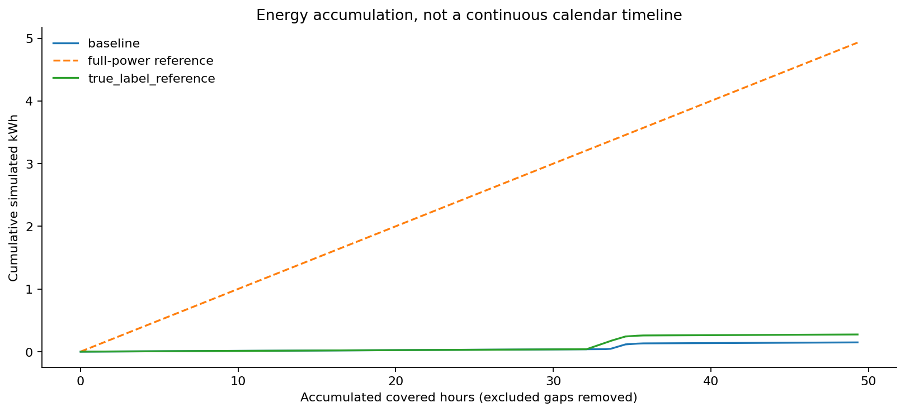
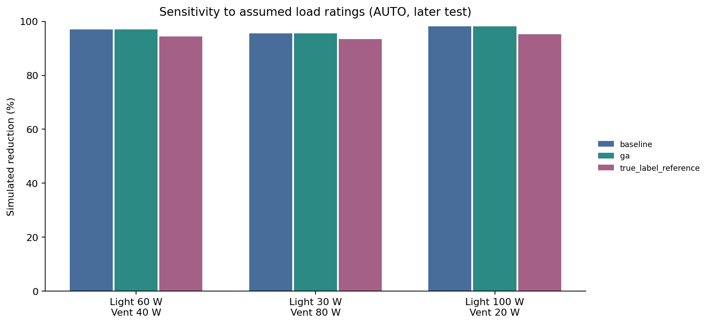

SOFT COMPUTING MINOR PROJECT / PHASE 6
Simulated energy and adaptive modes
Declared loads: 60 W lighting + 40 W ventilation
ECO, NORMAL and COMFORT adjust the fuzzy requests. AUTO selects among them using explicit occupancy, temperature and CO2 rules.
All energy is simulated. The full-power comparator is assumed, not measured. Baseline AUTO requests zero lighting for 1.549 occupied hours in covered test intervals. Do not treat withheld service as a demonstrated efficiency gain.
9,950 eligible intervals cover 84.681 hours. Long gaps, embargo intervals and the unknown final duration are excluded.
Methods and viva notes / Power and mode assumptions / Interval audit
AUTO comparison on identical later-test intervals
| source | covered_hours | simulated_kwh | full_power_reference_kwh | simulated_reduction_percent | occupied_zero_lighting_hours | occupied_zero_lighting_percent |
|---|---|---|---|---|---|---|
| baseline | 49.30222 | 0.14745 | 4.93022 | 97.00920 | 1.54889 | 62.53926 |
| ga | 49.30222 | 0.14745 | 4.93022 | 97.00920 | 1.54889 | 62.53926 |
| true_label_reference | 49.30222 | 0.27383 | 4.93022 | 94.44583 | 0.00000 | 0.00000 |
True-label reference is counterfactual, not a deployable predictor or measured correct control. Present data have already been explored; these are descriptive simulations.
Later-test simulated energy

Reduction against the assumed comparator

Read energy together with occupancy errors

AUTO mode durations

Accumulation over covered hours

Power-assumption sensitivity

Accounting coverage
| status | interval_rows | known_elapsed_seconds | accounted_seconds |
|---|---|---|---|
| eligible | 9950 | 304850.0 | 304850.0 |
| recording_gap_over_60s | 141 | 1415445.0 | 0.0 |
| touches_embargo | 37 | 1133.0 | 0.0 |
| final_row_unknown_duration | 1 | 0.0 | 0.0 |
No HVAC, standby, sensor-node or processor/network energy is included. Real fan/dimmer dynamics and physical environmental feedback are not modelled. Phase 7 dashboard integration has not started.